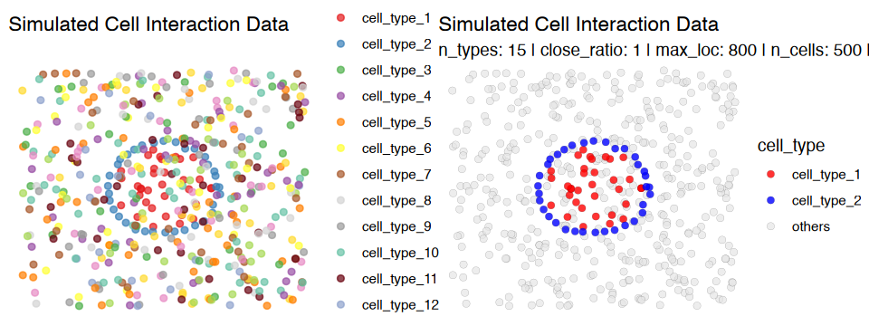
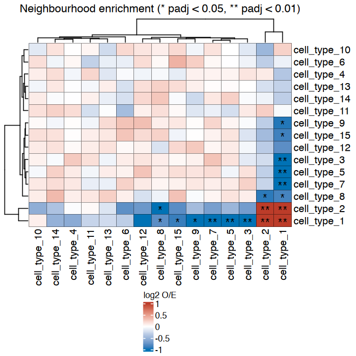
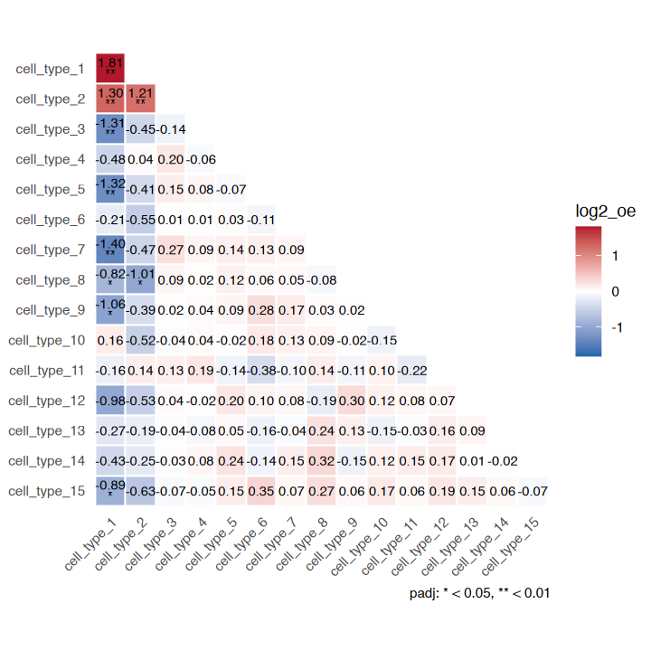
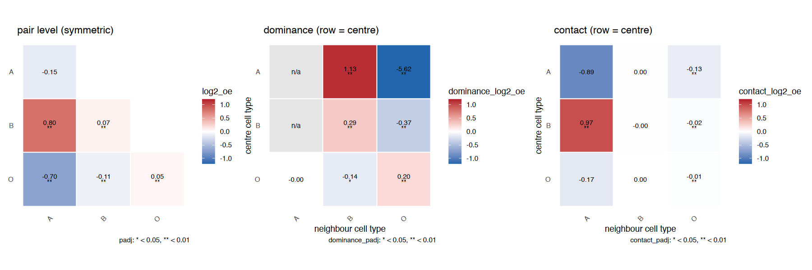
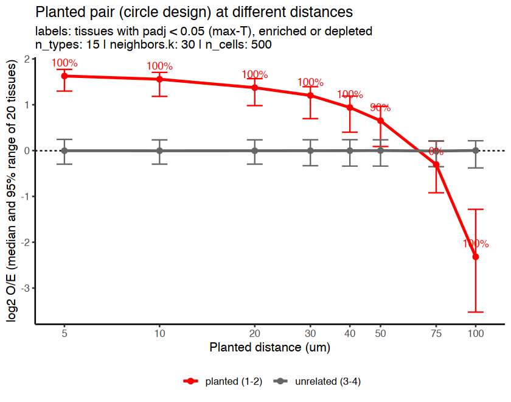
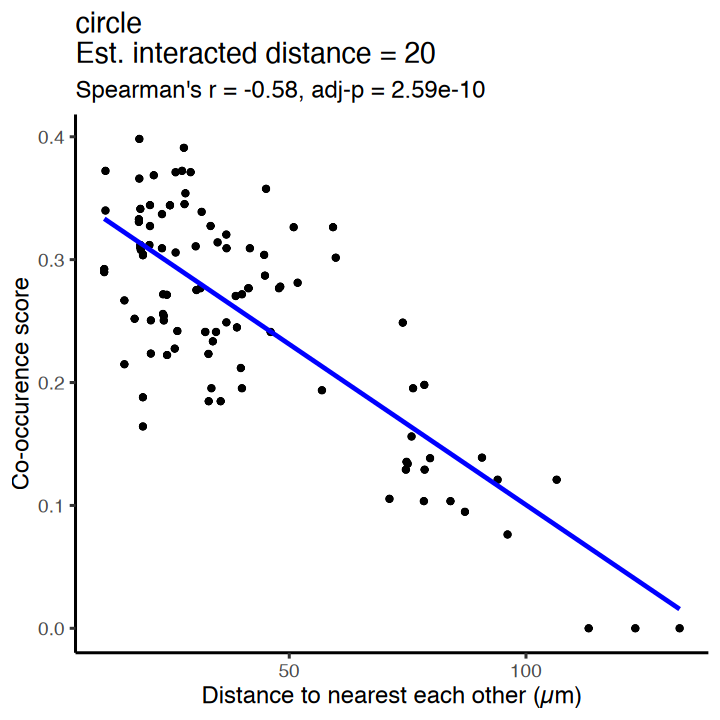
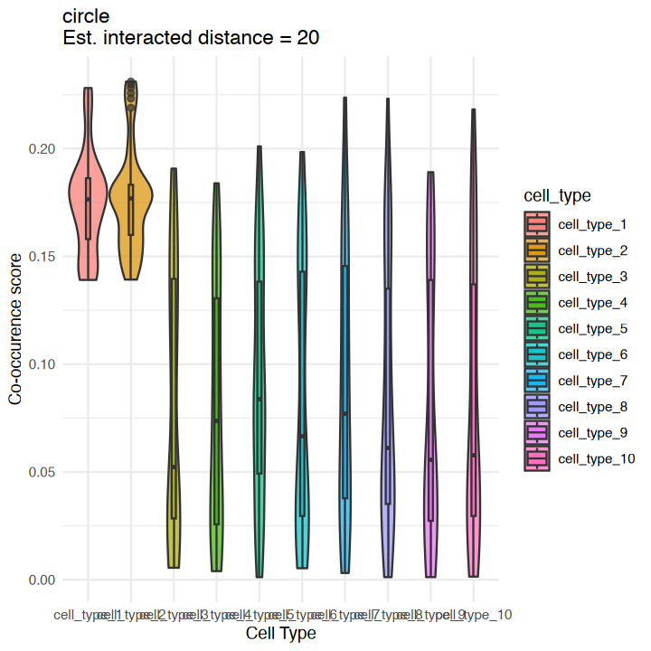
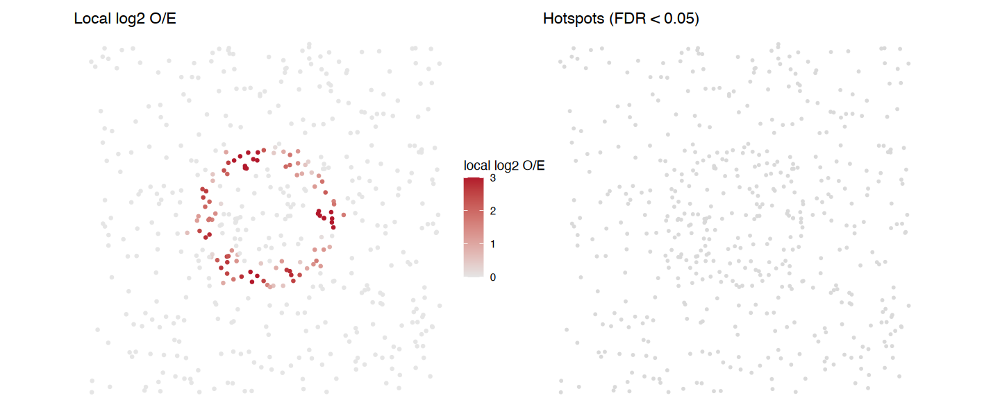

Tutorial for Spatial Neighborhood Analysis (SNA) & Spatial Co-localization Score (sCLS) Using Simulation Data
Source:vignettes/articles/SNA_tutorial_simulation.Rmd
SNA_tutorial_simulation.RmdThis article is a rendered copy of the Jupyter notebook vignettes/SNA_tutorial_simulation.ipynb;
download it to run the code yourself.
Author:
Jun Inamo
Computational Omics and Systems Immunology (COSI) Lab
Division of Rheumatology and Center for Health AI
University of Colorado School of Medicine, CO, USA
📧 jun.inamo@cuanschutz.edu
‘25 September, 2026’
Spatial neighborhood analysis (SNA, cell type level analysis)
First generate dummy data where two cell types (cell_type_1 and
cell_type_2 in the “cell_type” column) are close to each other:
cell_type_2 forms a ring around a disk of cell_type_1 (concentric
circles), for a fraction close_ratio of the cells.
Note (v0.99.2). Earlier versions shuffled the row and column labels independently in the permutation test. That inflated same-type z-scores to about +10 and biased different-type z-scores downwards, most strongly when there were few cell types (hence the old advice to use more than 10 cell types). The permutation now uses one shuffle for both, and the z-scores are calibrated under spatial randomness for any number of cell types (3 to 25 tested).
suppressPackageStartupMessages(suppressWarnings({
if (file.exists("../DESCRIPTION")) devtools::load_all("..", quiet = TRUE) else library(cohalu)
library(patchwork)
library(ggplot2)
library(magrittr)
library(dplyr)
library(circlize)
library(ComplexHeatmap)
library(ggrastr)
}))
seed=1234
close_ratio=1 # proportion of cell_type_1 and cell_type_2 that are close to each other
n_types=15 # Number of cell types
max_loc=800 # Maximum x and y coordinates in space
n_cells=500 # Number of total cells
test_type="circle" # "line", "circle", "distribute"
distance_param=20 # distance between cell_type_1 and cell_type_2
df = generate_sim(close_ratio = close_ratio,
n_types = n_types,
max_loc = max_loc,
n_cells = n_cells,
test_type = test_type,
distance_param = distance_param,
seed=seed)
head(df)
# x and y: coordinates
# cell_type: cell type| x | y | cell_type | |
|---|---|---|---|
| <dbl> | <dbl> | <fct> | |
| 1 | 355.4030 | 392.7360 | cell_type_1 |
| 2 | 490.8708 | 345.9954 | cell_type_1 |
| 3 | 451.1619 | 308.7717 | cell_type_1 |
| 4 | 501.4539 | 430.0083 | cell_type_1 |
| 5 | 280.3691 | 433.8681 | cell_type_1 |
| 6 | 389.7839 | 506.7382 | cell_type_1 |
check the distribution of cell types in the space
cluster_colors = manual_colors
names(cluster_colors) = paste0("cell_type_",1:n_types)
g1 = ggplot(df, aes(x = x, y = y, color = cell_type)) +
geom_point(alpha = 0.7) +
scale_color_manual(values = cluster_colors) +
theme_void() +
ggtitle("Simulated Cell Interaction Data")
g2 = ggplot(df %>% dplyr::mutate(cell_type = ifelse(cell_type %in% c("cell_type_1","cell_type_2"),as.character(cell_type),"others")), aes(x = x, y = y, fill = cell_type)) +
geom_point(data = df %>% dplyr::mutate(cell_type = ifelse(cell_type %in% c("cell_type_1","cell_type_2"),as.character(cell_type),"others")) %>% dplyr::filter(cell_type %in% c("others")),
alpha = 0.7, size = 2, shape = 21, stroke = 0.05, color = "black") +
geom_point(data = df %>% dplyr::mutate(cell_type = ifelse(cell_type %in% c("cell_type_1","cell_type_2"),as.character(cell_type),"others")) %>% dplyr::filter(cell_type %in% c("cell_type_1","cell_type_2")),
alpha = 0.8, size = 2, shape = 21, stroke = 0.05, color = "black") +
labs(title = "Simulated Cell Interaction Data",
subtitle = paste("n_types:", n_types, "| close_ratio:", close_ratio, "| max_loc:", max_loc, "| n_cells:", n_cells, "| distance_param:",distance_param)) +
scale_color_manual(values = c("cell_type_1" = "red",
"cell_type_2" = "blue",
"others" = "grey90")) +
scale_fill_manual(values = c("cell_type_1" = "red",
"cell_type_2" = "blue",
"others" = "grey90")) +
theme_void()
options(repr.plot.width=8, repr.plot.height=3)
g1|g2
Run neighborhood enrichment analysis
n_perm = 200
neighbors.k_ = 30 # Number of neighbors to search
nhood_res <- nhood_enrichment(
df,
cluster_key = "cell_type",
neighbors.k = neighbors.k_,
connectivity_key = "nn",
transformation = FALSE,
n_perms = n_perm, seed = seed, n_jobs = 4
)
names(nhood_res) # log2_oe, padj, pvalue, ...
round(nhood_res$log2_oe[1:4, 1:4], 2)- ‘zscore’
- ‘count’
- ‘expected’
- ‘log2_oe’
- ‘log2_oe_raw’
- ‘pvalue’
- ‘padj’
- ‘padj_bh’
- ‘contact’
- ‘contact_expected’
- ‘contact_log2_oe’
- ‘contact_pvalue’
- ‘contact_padj’
- ‘dominance’
- ‘dominance_expected’
- ‘dominance_log2_oe’
- ‘dominance_pvalue’
- ‘dominance_padj’
| Clustercell_type_1 | Clustercell_type_2 | Clustercell_type_3 | Clustercell_type_4 | |
|---|---|---|---|---|
| Clustercell_type_1 | 1.81 | 1.15 | -1.40 | -0.57 |
| Clustercell_type_2 | 1.45 | 1.21 | -0.68 | -0.02 |
| Clustercell_type_3 | -1.22 | -0.22 | -0.14 | 0.27 |
| Clustercell_type_4 | -0.38 | 0.10 | 0.13 | -0.06 |
How to read the result
-
log2_oe[i, j]: log2(observed / expected) contacts between cell types i and j, centred on the label shuffles so that it is 0 without interaction for any number of cells. 0 = as chance, +1 = twice, −1 = half. This is the effect size to compare between samples. -
padj[i, j]: within-sample significance for the unordered pair (i, j), adjusted over all K(K + 1)/2 pairs by the max-T permutation method (family-wise error). Its smallest value is 1 / (n_perms + 1).pvalueis the unadjusted value for a single pre-specified pair. - Rows and columns:
log2_oe[i, j]counts type-j cells among the neighbours of type-i cells; it is nearly symmetric.padjis symmetric (both directions are tested together).
zscore is still returned; it grows with the number of
cells, so use it only inside one sample.
plot_nhood_heatmap(nhood_res) draws the same heatmap in one
line.
L <- nhood_res$log2_oe; P <- nhood_res$padj
dimnames(L) <- dimnames(P) <- lapply(dimnames(L), function(v) gsub("^Cluster", "", v))
TITLE <- "Neighbourhood enrichment (* padj < 0.05, ** padj < 0.01)"
options(repr.plot.width = 6, repr.plot.height = 6)
sig_mat <- ifelse(P < 0.01, "**", ifelse(P < 0.05, "*", ""))
heatmap <- Heatmap(L,
name = "log2 O/E",
col = colorRamp2(c(-1, 0, 1), c("#0072B5FF", "white", "#BC3C29FF")),
show_row_names = TRUE, show_column_names = TRUE,
cluster_rows = TRUE, cluster_columns = TRUE,
column_title = TITLE,
rect_gp = gpar(col = "black", lwd = 0.3),
cell_fun = function(j, i, x, y, width, height, fill) {
if (sig_mat[i, j] != "") grid.text(sig_mat[i, j], x = x, y = y - 0.2 * height,
gp = gpar(fontsize = 15, col = "black", fontface = "bold"))
})
draw(heatmap, merge_legend = TRUE, heatmap_legend_side = "bottom", annotation_legend_side = "bottom")
# the same in one line
plot_nhood_heatmap(nhood_res)

Who surrounds whom? Directional statistics
Every A-B contact is also a B-A contact, so the pair-level
log2_oe is (nearly) symmetric and
plot_nhood_heatmap() shows the average of both directions.
It cannot tell “A is surrounded by B” from “B is surrounded by A”.
nhood_enrichment() also returns two directional statistics,
with row = centre cell type and column = neighbour cell type:
-
contact[i, j]: share of type-i cells with at least one type-j neighbour (how much of population i touches j); -
dominance[i, j]: share of type-i cells whose neighbours are at least half type j (is the neighbourhood of i dominated by j).
Each comes with *_expected, centred
*_log2_oe, *_pvalue and max-T
*_padj over all ordered pairs. Below, a rare type A always
sits inside small clusters of an abundant type B: the pair-level heatmap
is symmetric, dominance is high only for A as the centre,
and contact is high only for B as the centre (A touches B
by chance anyway because B is abundant).
set.seed(1); n <- 3000
da <- data.frame(x = runif(n, 0, 600), y = runif(n, 0, 600), cell_type = sample(c("B", "O"), n, TRUE, prob = c(0.4, 0.6)))
ctr <- cbind(runif(90, 20, 580), runif(90, 20, 580)) # 90 A cells ...
da <- rbind(da, data.frame(x = ctr[, 1], y = ctr[, 2], cell_type = "A"),
data.frame(x = rep(ctr[, 1], each = 6) + rnorm(540, 0, 6), # ... each inside a cluster of 6 B cells
y = rep(ctr[, 2], each = 6) + rnorm(540, 0, 6), cell_type = "B"))
rownames(da) <- paste0("c", seq_len(nrow(da))); da$cell_type <- factor(da$cell_type, levels = c("A", "B", "O"))
ra <- nhood_enrichment(da, cluster_key = "cell_type", neighbors.k = 10, n_perms = 200, seed = 1, n_jobs = 1)
options(repr.plot.width = 15, repr.plot.height = 5)
(plot_nhood_heatmap(ra, limits = c(-1.2, 1.2)) + ggtitle("pair level (symmetric)")) |
(plot_nhood_heatmap(ra, value = "dominance_log2_oe", limits = c(-1.2, 1.2)) + ggtitle("dominance (row = centre)")) |
(plot_nhood_heatmap(ra, value = "contact_log2_oe", limits = c(-1.2, 1.2)) + ggtitle("contact (row = centre)"))
Run the same analysis for different planted distances (20 new tissues
each). Compare the effect size log2_oe and count how often
the planted pair passes padj < 0.05; the unrelated pair
should stay at 0 and never pass. In this circle design, type-2
cells form a ring at the planted distance around a disc of type-1 cells.
Up to about 50 um the ring lies within the k-neighbourhood and the pair
is enriched; at 75-100 um the ring keeps the two types apart, so the
pair becomes significantly depleted (negative log2 O/E).
set.seed(seed)
random_seeds <- sample(1000:9999, 20)
n_types_sim <- n_types
# For each planted distance: 20 new tissues; keep the effect size (log2_oe) and the
# max-T adjusted p-value (padj) of the planted pair and of an unrelated pair
accuracy_df_all <- do.call(rbind, lapply(c(5, 10, 20, 30, 40, 50, 75, 100), function(distance_param) {
do.call(rbind, lapply(random_seeds, function(seed_) {
df <- generate_sim(close_ratio = close_ratio, n_types = n_types_sim, max_loc = max_loc,
n_cells = n_cells, test_type = "circle",
distance_param = distance_param, seed = seed_)
r <- nhood_enrichment(df, cluster_key = "cell_type", neighbors.k = neighbors.k_,
connectivity_key = "nn", transformation = FALSE,
n_perms = n_perm, seed = seed_, n_jobs = 1)
L <- r$log2_oe; P <- r$padj
dimnames(L) <- dimnames(P) <- lapply(dimnames(L), function(v) gsub("^Cluster", "", v))
data.frame(test_type = "circle", seed = seed_, distance_param = distance_param,
pair = c("planted (1-2)", "unrelated (3-4)"),
log2_oe = c(L["cell_type_1", "cell_type_2"], L["cell_type_3", "cell_type_4"]),
padj = c(P["cell_type_1", "cell_type_2"], P["cell_type_3", "cell_type_4"]))
}))
}))
head(accuracy_df_all)| test_type | seed | distance_param | pair | log2_oe | padj | |
|---|---|---|---|---|---|---|
| <chr> | <int> | <dbl> | <chr> | <dbl> | <dbl> | |
| 1 | circle | 8451 | 5 | planted (1-2) | 1.5861553 | 0.004975124 |
| 2 | circle | 8451 | 5 | unrelated (3-4) | -0.3776475 | 1.000000000 |
| 3 | circle | 9015 | 5 | planted (1-2) | 1.6893718 | 0.004975124 |
| 4 | circle | 9015 | 5 | unrelated (3-4) | 0.2247840 | 1.000000000 |
| 5 | circle | 8161 | 5 | planted (1-2) | 1.2075464 | 0.004975124 |
| 6 | circle | 8161 | 5 | unrelated (3-4) | 0.1226222 | 1.000000000 |
summary_df <- accuracy_df_all %>%
dplyr::group_by(pair, distance_param) %>%
dplyr::summarise(median = median(log2_oe),
lower_ci = quantile(log2_oe, 0.025), upper_ci = quantile(log2_oe, 0.975),
detected = mean(padj < 0.05), .groups = "drop")
options(repr.plot.width = 7, repr.plot.height = 5.5)
ggplot(summary_df, aes(distance_param, median, color = pair)) +
geom_hline(yintercept = 0, linetype = "dashed") +
geom_line(linewidth = 1) + geom_errorbar(aes(ymin = lower_ci, ymax = upper_ci), width = 0.05) + geom_point(size = 2) +
geom_text(data = subset(summary_df, pair == "planted (1-2)"),
aes(label = scales::percent(detected, accuracy = 1)), vjust = -1.2, size = 3.5, show.legend = FALSE) +
scale_x_log10(breaks = unique(summary_df$distance_param)) +
scale_color_manual(values = c("planted (1-2)" = "red", "unrelated (3-4)" = "grey40"), name = NULL) +
labs(x = "Planted distance (um)", y = "log2 O/E (median and 95% range of 20 tissues)",
title = "Planted pair (circle design) at different distances",
subtitle = paste0("labels: tissues with padj < 0.05 (max-T), enriched or depleted\nn_types: ", n_types,
" | neighbors.k: ", neighbors.k_, " | n_cells: ", n_cells)) +
theme_classic(base_size = 12) + theme(legend.position = "bottom")
Spatial co-localization score (sCLA, cell-cell level analysis)
Again we generate dummy data where two cell types (cell_type_1 and cell_type_2 in “cell_type” cik) are close to each other. Here we assume that cell_type_1 and cell_type_2 are close to each other (concentric cicle) by close_ratio.
seed=1234
close_ratio=1 # proportion of cell_type_1 and cell_type_2 that are close to each other
n_types=10 # Number of cell types
max_loc=800 # Maximum x and y coordinates in space
n_cells=500 # Number of total cells
test_type="circle" # "line", "circle", "distribute"
distance_param = 20 # distance between cell_type_1 and cell_type_2
df = generate_sim(close_ratio = close_ratio,
n_types = n_types,
max_loc = max_loc,
n_cells = n_cells,
test_type = test_type,
distance_param = distance_param,
seed=seed)
head(df)
# x and y: coordinates
# cell_type: cell type| x | y | cell_type | |
|---|---|---|---|
| <dbl> | <dbl> | <fct> | |
| 1 | 445.1298 | 397.7724 | cell_type_1 |
| 2 | 437.2731 | 301.0822 | cell_type_1 |
| 3 | 301.2229 | 365.6020 | cell_type_1 |
| 4 | 335.8962 | 315.8329 | cell_type_1 |
| 5 | 352.9081 | 515.0693 | cell_type_1 |
| 6 | 322.6797 | 325.7101 | cell_type_1 |
check the distribution of cell types in the space
cluster_colors = manual_colors
names(cluster_colors) = paste0("cell_type_",1:n_types)
g1 = ggplot(df, aes(x = x, y = y, color = cell_type)) +
geom_point(alpha = 0.7) +
scale_color_manual(values = cluster_colors) +
theme_void() +
ggtitle("Simulated Cell Interaction Data")
g2 = ggplot(df %>% dplyr::mutate(cell_type = ifelse(cell_type %in% c("cell_type_1","cell_type_2"),as.character(cell_type),"others")), aes(x = x, y = y, fill = cell_type)) +
geom_point(data = df %>% dplyr::mutate(cell_type = ifelse(cell_type %in% c("cell_type_1","cell_type_2"),as.character(cell_type),"others")) %>% dplyr::filter(cell_type %in% c("others")),
alpha = 0.7, size = 2, shape = 21, stroke = 0.05, color = "black") +
geom_point(data = df %>% dplyr::mutate(cell_type = ifelse(cell_type %in% c("cell_type_1","cell_type_2"),as.character(cell_type),"others")) %>% dplyr::filter(cell_type %in% c("cell_type_1","cell_type_2")),
alpha = 0.8, size = 2, shape = 21, stroke = 0.05, color = "black") +
labs(title = "Simulated Cell Interaction Data",
subtitle = paste("n_types:", n_types, "| close_ratio:", close_ratio, "| max_loc:", max_loc, "| n_cells:", n_cells, "| distance_param:",distance_param)) +
scale_color_manual(values = c("cell_type_1" = "red",
"cell_type_2" = "blue",
"others" = "grey90")) +
scale_fill_manual(values = c("cell_type_1" = "red",
"cell_type_2" = "blue",
"others" = "grey90")) +
theme_void()
options(repr.plot.width=8, repr.plot.height=4)
g1|g2
Run co-localization analysis
cluster_x <- "cell_type_1"
cluster_y <- "cell_type_2"
radius_ = 30 # Radius to search for neighbors (µm, cell_type_2) around anchor cells (cell_type_1)
neighbors.k_ = 30 # Number of neighbors to search
cooccur_local_df <- cooccur_local(
df,
cluster_x = cluster_x,
cluster_y = cluster_y,
connectivity_key = "nn",
neighbors.k = neighbors.k_,
radius = radius_,
maxnsteps = 15
)
summary(cooccur_local_df) cooccur_local_cell_type_1_cell_type_2
Min. :0.001175
1st Qu.:0.037670
Median :0.103213
Mean :0.102000
3rd Qu.:0.161757
Max. :0.231130 Check how the co-localization score is distributed in the space
g3 = ggplot() +
geom_point(df %>%
dplyr::mutate(score = cooccur_local_df$cooccur_local_cell_type_1_cell_type_2) %>%
dplyr::filter(!(cell_type %in% c("cell_type_1","cell_type_2"))),
mapping = aes(x = x, y = y, fill = score),
alpha = 0.7, size = 2, shape = 21, stroke = 0.05, color = "black") +
geom_point(df %>%
dplyr::mutate(score = cooccur_local_df$cooccur_local_cell_type_1_cell_type_2) %>%
dplyr::filter(cell_type %in% c("cell_type_1","cell_type_2")),
mapping = aes(x = x, y = y, fill = score),
alpha = 0.7, size = 2, shape = 21, stroke = 0.05, color = "black") +
theme_void() +
scale_fill_gradient(low = "grey90", high = "red") +
ggtitle("Simulated Cell Interaction Data")
options(repr.plot.width=12, repr.plot.height=4)
g1 | g2 | g3
Check the relationship between the co-localization score and the distance between cell_type_1 and cell_type_2
one_cells <- df %>% dplyr::filter(cell_type=="cell_type_1")
two_cells <- df %>% dplyr::filter(cell_type=="cell_type_2")
res <- RANN::nn2(data = one_cells[,1:2], query = two_cells[,1:2], k = 1)
dist_to_nearest <- res$nn.dists[, 1]
two_cells$dist_nearest <- dist_to_nearest
res <- RANN::nn2(data = two_cells[,1:2], query = one_cells[,1:2], k = 1)
dist_to_nearest <- res$nn.dists[, 1]
one_cells$dist_nearest <- dist_to_nearest
coords_df = dplyr::left_join(df %>%
dplyr::mutate(score = cooccur_local_df$cooccur_local_cell_type_1_cell_type_2),
rbind(one_cells,two_cells), by = c("x","y","cell_type"))
coef = cor.test(na.omit(coords_df)$score,na.omit(coords_df)$dist_nearest,method = "spearman",use = "pairwise.complete.obs")$estimate
pval = cor.test(na.omit(coords_df)$score,na.omit(coords_df)$dist_nearest,method = "spearman",use = "pairwise.complete.obs")$p.value
options(repr.plot.width=6, repr.plot.height=6)
ggplot(data = coords_df, aes(x = dist_nearest, y = score)) +
geom_point_rast() +
geom_smooth(
method = "lm", se = FALSE, color = "blue"
) +
theme_classic(base_size = 14) +
labs(
x = "Distance to nearest each other (µm)",
y = paste("Co-occurence score"),
title = paste0(test_type,"\nEst. interacted distance = ", distance_param),
subtitle = paste0(
"Spearman's r = ", round(coef, 2),
", adj-p = ", signif(pval, 3)
)
)
Check the ROC curve and AUC value to evaluate the performance of the co-localization score
Check the distribution of the co-localization score by cell type
coords_df %>%
ggplot(aes(x = cell_type, y = score, fill = cell_type)) +
geom_violin(width = 1, alpha = 0.7) +
geom_boxplot(width = 0.1, alpha = 0.7) +
#geom_jitter(width = 0.1, alpha = 0.7) +
theme_minimal() +
labs(
x = "Cell Type",
y = "Co-occurence score",
title = paste0(test_type,"\nEst. interacted distance = ", distance_param)
)
Where do the two cell types meet?
cooccur_local_oe()
cooccur_local_oe() counts cluster_x–cluster_y pairs
within radius of every cell, divides them by their exact
expectation under label shuffling, and smooths observed and expected
pairs with Gaussian weights of width bandwidth. With
n_perms > 0 it also tests every cell (hotspots, BH over
cells). Unlike the mean sCLS below, the section-level value does not
grow with the abundance of the two cell types.
rownames(df) <- paste0("cell", seq_len(nrow(df)))
lo <- cooccur_local_oe(df, "cell_type_1", "cell_type_2", radius = 30, n_perms = 199, seed = 1)
attr(lo, "section_log2_oe")
d_lo <- cbind(df, lo)
options(repr.plot.width = 12, repr.plot.height = 5)
(ggplot(d_lo, aes(x, y, color = pmin(pmax(local_log2_oe, 0), 3))) + geom_point(size = 0.8) +
scale_color_gradient(low = "grey90", high = "#B2182B", name = "local log2 O/E") + coord_equal() + theme_void() + ggtitle("Local log2 O/E")) |
(ggplot(d_lo, aes(x, y)) + geom_point(color = "grey85", size = 0.6) + geom_point(data = subset(d_lo, padj < 0.05), color = "#B2182B", size = 0.9) +
coord_equal() + theme_void() + ggtitle("Hotspots (FDR < 0.05)"))1.99828623708995

R version 4.3.2 (2023-10-31)
Platform: aarch64-apple-darwin20 (64-bit)
Running under: macOS 26.3.1
Matrix products: default
BLAS: /Library/Frameworks/R.framework/Versions/4.3-arm64/Resources/lib/libRblas.0.dylib
LAPACK: /Library/Frameworks/R.framework/Versions/4.3-arm64/Resources/lib/libRlapack.dylib; LAPACK version 3.11.0
locale:
[1] en_US.UTF-8/en_US.UTF-8/en_US.UTF-8/C/en_US.UTF-8/en_US.UTF-8
time zone: Asia/Tokyo
tzcode source: internal
attached base packages:
[1] grid stats graphics grDevices utils datasets methods
[8] base
other attached packages:
[1] ggrastr_1.0.2 ComplexHeatmap_2.18.0 circlize_0.4.15
[4] dplyr_1.1.4 magrittr_2.0.3 ggplot2_3.4.4
[7] patchwork_1.1.3 cohalu_0.99.3 testthat_3.2.1
loaded via a namespace (and not attached):
[1] RColorBrewer_1.1-3 shape_1.4.6 rstudioapi_0.15.0
[4] jsonlite_2.0.0 magick_2.8.2 ggbeeswarm_0.7.2
[7] spatstat.utils_3.1-2 farver_2.1.1 GlobalOptions_0.1.2
[10] fs_1.6.3 vctrs_0.6.5 ROCR_1.0-11
[13] Cairo_1.6-2 memoise_2.0.1 spatstat.explore_3.3-4
[16] base64enc_0.1-3 htmltools_0.5.7 usethis_2.2.2
[19] sctransform_0.4.1 parallelly_1.36.0 KernSmooth_2.23-22
[22] htmlwidgets_1.6.4 desc_1.4.3 ica_1.0-3
[25] plyr_1.8.9 plotly_4.10.3 zoo_1.8-12
[28] cachem_1.0.8 uuid_1.1-1 igraph_1.6.0
[31] iterators_1.0.14 mime_0.12 lifecycle_1.0.4
[34] pkgconfig_2.0.3 Matrix_1.6-5 R6_2.5.1
[37] fastmap_1.1.1 clue_0.3-65 fitdistrplus_1.1-11
[40] future_1.33.1 shiny_1.8.0 digest_0.6.33
[43] colorspace_2.1-0 S4Vectors_0.40.2 rprojroot_2.0.4
[46] Seurat_5.2.1 tensor_1.5 RSpectra_0.16-1
[49] irlba_2.3.5.1 pkgload_1.3.3 labeling_0.4.3
[52] progressr_0.14.0 spatstat.sparse_3.1-0 mgcv_1.9-0
[55] httr_1.4.7 polyclip_1.10-6 abind_1.4-5
[58] compiler_4.3.2 remotes_2.4.2.1 doParallel_1.0.17
[61] withr_2.5.2 fastDummies_1.7.3 pkgbuild_1.4.3
[64] MASS_7.3-60 sessioninfo_1.2.2 rjson_0.2.23
[67] tools_4.3.2 vipor_0.4.7 lmtest_0.9-40
[70] beeswarm_0.4.0 httpuv_1.6.13 future.apply_1.11.1
[73] goftest_1.2-3 glue_1.6.2 nlme_3.1-163
[76] promises_1.2.1 pbdZMQ_0.3-10 Rtsne_0.17
[79] cluster_2.1.4 reshape2_1.4.4 generics_0.1.3
[82] gtable_0.3.4 spatstat.data_3.1-4 tidyr_1.3.0
[85] data.table_1.16.0 sp_2.1-2 BiocGenerics_0.48.1
[88] spatstat.geom_3.3-5 RcppAnnoy_0.0.21 foreach_1.5.2
[91] ggrepel_0.9.4 RANN_2.6.1 pillar_1.11.0
[94] stringr_1.5.1 spam_2.10-0 IRdisplay_1.1
[97] RcppHNSW_0.5.0 later_1.3.2 splines_4.3.2
[100] moments_0.14.1 lattice_0.21-9 survival_3.5-7
[103] deldir_2.0-2 tidyselect_1.2.0 miniUI_0.1.1.1
[106] pbapply_1.7-2 gridExtra_2.3 IRanges_2.36.0
[109] scattermore_1.2 stats4_4.3.2 brio_1.1.4
[112] devtools_2.4.5 matrixStats_1.2.0 stringi_1.8.3
[115] lazyeval_0.2.2 evaluate_0.23 codetools_0.2-19
[118] tibble_3.2.1 cli_3.6.2 uwot_0.1.16
[121] IRkernel_1.3.2 xtable_1.8-4 reticulate_1.35.0
[124] repr_1.1.6 munsell_0.5.0 Rcpp_1.0.11
[127] globals_0.16.2 spatstat.random_3.3-2 png_0.1-8
[130] spatstat.univar_3.1-2 parallel_4.3.2 ellipsis_0.3.2
[133] dotCall64_1.1-1 profvis_0.3.8 urlchecker_1.0.1
[136] listenv_0.9.0 viridisLite_0.4.2 scales_1.3.0
[139] ggridges_0.5.5 SeuratObject_5.0.2 purrr_1.0.2
[142] crayon_1.5.2 GetoptLong_1.0.5 rlang_1.1.2
[145] cowplot_1.1.2